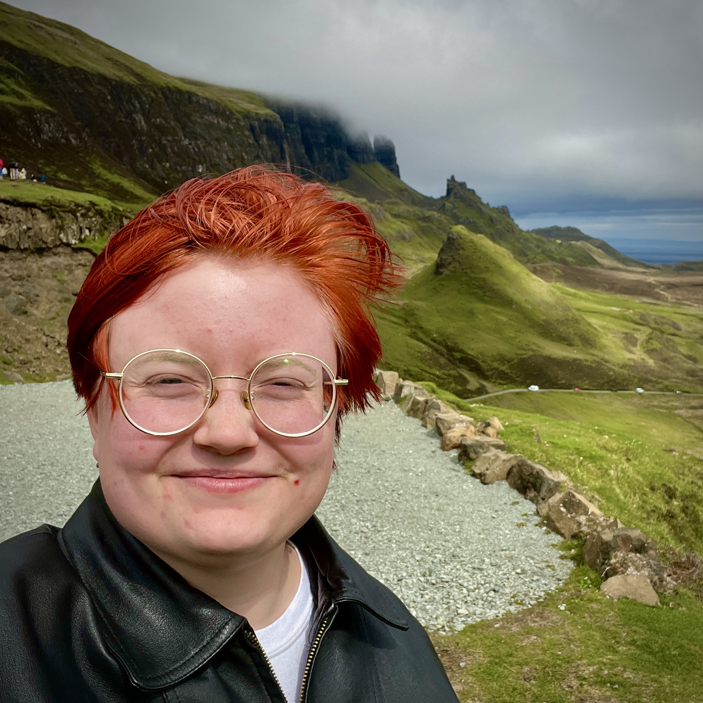

ALYSSA CRAWFORD
-
alyssajcrawford1@gmail.com
- (+1) 480 440 1210
- 14 July 2001
- Chandler, AZ
- Lawrence, KS
- @alyssajcrawford1
- @ALY55AJC
- Alyssa Crawford
- @alyssajcrawford
Recent computer science graduate with a love for all things data, programming, science, and education. Passionate about learning, solving puzzles, and using my skills to help people, the planet, and everything in-between!
EDUCATION
Bachelor of Science in Computer Science
May 2023University of Arizona, Tucson, AZ
Minor in ISTA (Information Science, Technology, & the Arts)EXPERIENCE
-
Teaching Assistant - Data Bootcamp
August 2023 - PresentedX, Remote
- Aids in teaching an online bootcamp centered on data analytics and visualization using Python, SQL, Javascript, NoSQL, Excel, and more.
- Troubleshoots student programming problems during and after hours.
- Engages in administrative duties such as attendance, Zoom management, and project grading.
-
Front of House
August 2023 - PresentTaylor's Donuts, Lawrence, KS
- Maintains a high standard of customer service and hospitality while serving artisan donuts and specialty coffee.
- Undertakes all front of house operations, including food service, Square POS, cleaning, stocking, and machine maintenance.
-
Section Leader - ISTA 131 "Dealing with Data"
August 2021 - May 2023University of Arizona, Tucson, AZ
- Lead a weekly 2-hour lab section, giving review lectures on topics in Python (pandas, Matplotlib, Jupyter) and SQLite and guiding students through in-class lab assignments.
- Held weekly office hours to help students understand and debug Python-based homework assignments on data analysis, manipulation, and visualization.
-
PIT-UN Data Science Intern
May 2022 - August 2022University of Arizona, Tucson, AZ
- Developed skills in data science, data visualization, machine learning, and data tidying using Python (Anaconda) and R (tidyverse) and applied them to public interest technology (PIT), non-profits, and research.
- Collaborated on machine learning model (scikit-learn, OpenCV) to estimate rock vernal pool depth using trail cam image data.
-
Code Sensei (Children's Coding Instructor)
October 2021 - May 2022Code Ninjas, Tucson, AZ
- Taught and guided students ages 7-13 through computer programming topics using Scratch, JavaScript, Roblox, and Unity.
- Interfaced with parents/customers through tours, events, and after-class discussions about student success.
SKILLS
Languages
- Python,
- Java,
- SQL,
- Javascript,
- R,
- HTML,
- CSS,
- C,
- Assembly,
- PHP
Tools & Technical Skills
- Data Analysis (Anaconda, R tidyverse),
- Machine Learning (scikit-learn, OpenCV),
- Databases,
- Data Tidying,
- Data Visualization (Matplotlib, Jupyter, D3.js, vega.js, ggplot2),
- Object-Oriented Programming,
- Testing,
- Computer Science Theory,
- Teamwork (git, GitHub, Agile Methodologies),
- Statistics & Mathematics
Additional Skills
- Education,
- Research,
- Ethics,
- Leadership,
- Other Sciences,
- Conflict Resolution,
- Customer Service,
- Accessibility,
- eCommerce (Shopify),
- Specialty Coffee